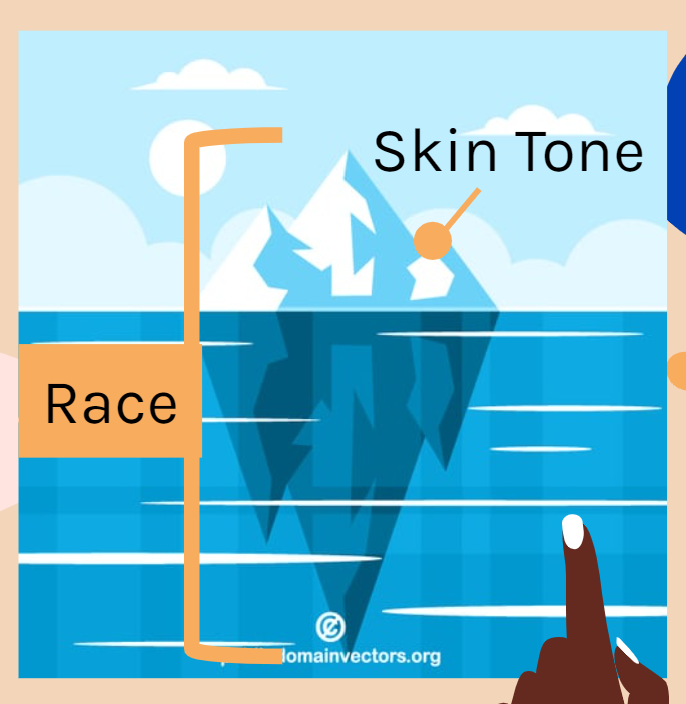

|
teanna barrett I’m Teanna Barrett (she/her), a Ph.D. student at the University of Washington Allen School of Computer Science & Engineering. I'm co-advised by Amy Zhang and Leilani Battle. I'm the recipient of the College of Engineering Dean's Fellowship, ARCS Award, and a member of the LEAP Alliance. I earned my B.S. in Computer Science with a minor in Philosophy at Howard University. I'm an alum of the Howard Universiy Karsh STEM Scholars program. Current Aim: Explore how to encourage the practice of ethical pluralism that directly confronts western hegemony in technology creation. Check out my personal Substack to learn more about my hobbies and random musings! |
cv |
researchMy research is an interrogation of the design, deployment and evaluation of data science (including and beyond ml) as a means to understand contemporary anti-blackness and inform the design paradigms of liberatory technology. Towards this research aim I engage with the frameworks and techniques of ml ethics/fairness, social computing, critical theory, and the philosophies of the Black Diaspora. Representative papers are highlighted. |
|

|
Skin Deep: Investigating Subjectivity in Skin Tone Annotations for Computer Vision Benchmark Datasets
Teanna Barrett Quan Ze Chen, Amy X. Zhang ACM FAccT, 2023 project page / ACM FAccT Comprehensive literature review and inter-rater reliability study on manual skin tone annotations to gain insight on skin tone stratification and other social aspects of subjectivity impact the annotations. |
|
|
KiwiBots on Kampus:A Case Study of Neoliberal Technology in Black Spaces
Teanna Barrett GRACE: Global Review of AI Community Ethics, 2023 / A opinion piece of the ethical concerns of Kiwibots on Howard University's campus. |
|
|
Evaluating Novel Mask-RCNN Architectures for Ear Mask Segmentation
Saurav K. Aryal, Teanna Barrett Gloria Washington International Conference on Bioinformatics and Biomedical Science, 2022 / arXiv This paper trains and compares three newer models to the state-of-the-art MaskRCNN (ResNet 101+FPN) model across four different datasets. The Average Precision (AP) scores reported show that the newer models outperform the state-of-the-art but no one model performs the best over multiple datasets. |
mediaPut Carousel media view here (YT playlist, blogs, misc presentations, etc) Instructions: https://programmingduck.com/articles/javascript-carousel |
academic service [under construction] |


{kind=link}
|
This website is a personalized version of Jon Barron's website. Based on Barron's recommendation, also consider using Leonid Keselman's Jekyll fork of this page. |